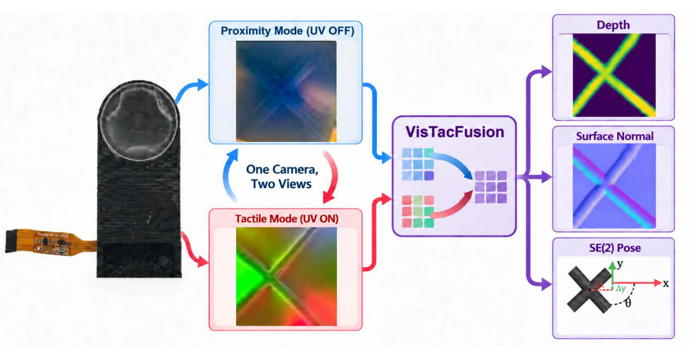
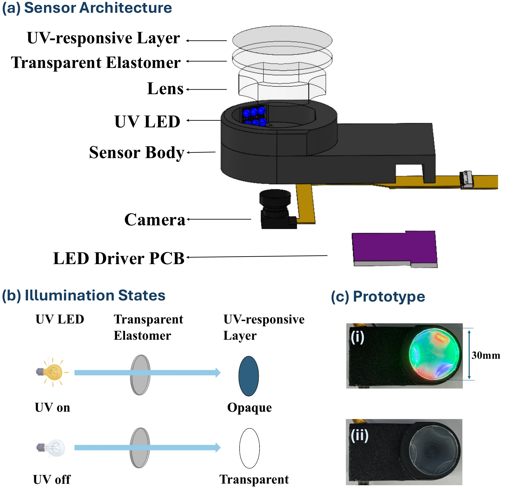
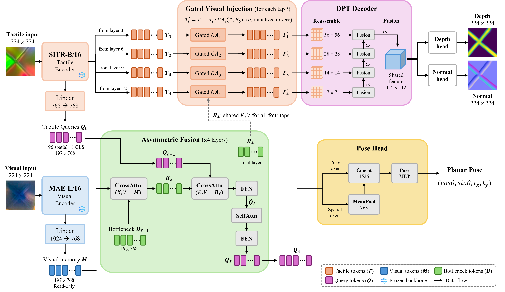
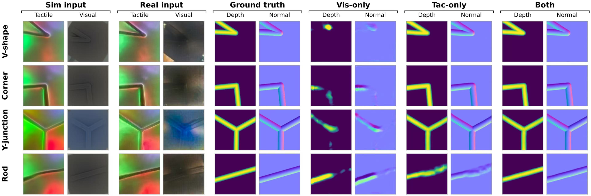

{kind=link}
Depth MSE
61.2% reduction
0.0170 → 0.0066 mm²

Vision and touch provide complementary cues for object pose and local contact geometry, but external cameras are often occluded at the contact site. We present GelSlim 5.0, a fingertip sensor that acquires visual and tactile observations with one fixed camera and a continuous UV-responsive contact layer. By switching illumination, the camera sequentially acquires through-membrane visual images and contact-sensitive tactile images from a shared viewpoint, avoiding inter-camera extrinsic calibration.
To combine these observations, we introduce VisTacFusion, a multimodal transformer with separate prediction paths for planar object pose and contact geometry. Asymmetric bottleneck fusion incorporates visual context while preserving tactile spatial features for depth and surface-normal estimation. Modality dropout enables inference with paired inputs or either modality alone.
On real validation data from 12 known objects, paired inputs reduce depth MSE, angular error, and translation L₁ by 61.2%, 72.3%, and 61.3%, respectively, relative to tactile-only inference with the same model. Relative to visual-only inference, the corresponding reductions are 93.7%, 6.1%, and 8.6%.

Enlarge figure ↗UV illumination switches the observation modality; the camera and lens stay fixed.
Top: rendered tactile contact. Bottom: rendered visual view.
VisTacFusion fuses visual and tactile features through 16 bottleneck tokens, then uses separate prediction paths:
Modality dropout allows the same model to operate with paired or single-modality inputs.

Enlarge figure ↗61.2% reduction
0.0170 → 0.0066 mm²
72.3% reduction
2.350° → 0.652°
61.3% reduction
0.0137 → 0.0053
Same model, different inputs. The pair is best on every metric.

Enlarge figure ↗